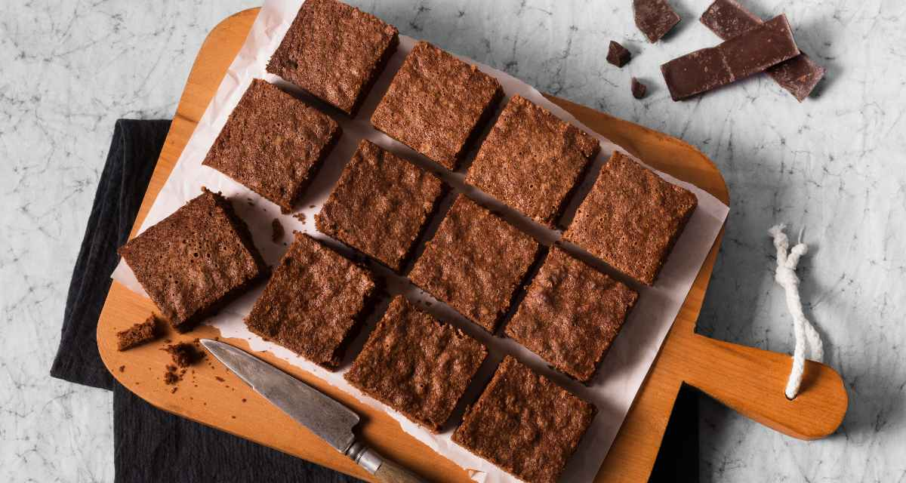
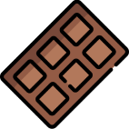
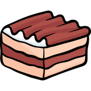
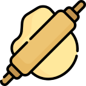

Nossa jornada começa com a missão de destacar métodos culinários que vão além da simples preparação de refeições.
Nosso objetivo é reduzir o desperdício de alimentos, contribuir para a preservação ambiental e, ao mesmo tempo, criar pratos
deliciosos e nutritivos. Inspirados por uma pesquisa realizada em um restaurante no sudoeste do Paraná, onde descobrimos o potencial
oculto nas cascas, talos e sementes, decidimos agir. Aqui, você encontrará nosso compromisso com a sustentabilidade, nossas deliciosas
receitas e nosso desejo de tornar o mundo um lugar melhor, um prato de comida de cada vez. Bem-vindo à nossa jornada culinária com
propósito!
NOSSAS RECEITAS PARA VOCÊ
Brownie com casca de
banana
INGREDIENTES
- 2 bananas média-grande;
- 2 ovos;
- 2 colheres de sobremesa de mel;
- 4 colheres de sobremesa de óleo de coco;
- 1 xícara de cacau 32%
- 1 xícara de farinha de aveia
- 9 quadradinhos de chocolate meio amargo (a gosto)
MODO DE PREPARO
- 1- Higienize as cascas de banana com água em abundância.
- 2- Em um liquidificador ou processador, bata todos os ingredientes úmidos (exemplo: ovos, leite, óleo) até que fiquem homogêneos.
- 3- Transfira a mistura úmida para uma tigela grande.
- 4- Adicione os ingredientes secos (exemplo: farinha, açúcar, fermento) à mistura úmida, incorporando delicadamente. Misture até que a massa esteja homogênea.
- 
- 5- Se desejar, corte os quadradinhos de chocolate em pedaços pequenos.
- 6- Pré-aqueça o forno a 180 graus Celsius.
- 7- Forre uma forma pequena ou média com papel manteiga.
- 8- Despeje a massa na forma preparada.
- 
- 9- Distribua os quadradinhos de chocolate uniformemente por toda a forma, sem misturá-los na massa.
- 10- Leve ao forno pré-aquecido e asse a 180 graus Celsius por 20-30 minutos, ou até que a parte externa esteja firme, mas o interior ainda esteja úmido.
- 11- Retire do forno e deixe esfriar
- 12- Corte em pedaços e sirva
Biscoito com casca de
laranja
INGREDIENTES
- 4 xícaras de farinha de aveia;
- 1 ovo grande;
- 200g de farinha de trigo;
- 1/2 colher (chá) de sal;
- 1 xícara (chá) de açúcar;
- 1 colher (sopa) de raspa de casca de laranja.
MODO DE PREPARO
- 1- Raspe a casca de uma laranja e guarde;
- 2- Na batedeira, bata a margarina, o açúcar, o ovo inteiro (clara e gema), a raspa da casca da laranja reservada, o sal e continue batendo;
- 3- Acrescente a farinha de trigo aos poucos e mexa com as mãos, ou bata na batedeira com o batedor próprio para massas até obter uma massa uniforme;

- 4- Com as mãos, faça pequenas bolas amasse-as entre as palmas e faça os detalhes com um garfo;
- 5- Arrume-as em assadeiras retangulares (sem untar nem enfarinhar) deixando um pequeno espaço entre elas;
- 6- Leve para assar em forno pré-aquecido, em temperatura moderada, por 10 a 15 minutos, ou até ficarem levemente dourados.
Tortinha com casca de
maçã
INGREDIENTES
- Farinha de trigo;
- 2 maçãs cortadas;
- Óleo de coco;
- Canela (a gosto)
- Açucar mascavo;
- Água gelada;
- Papel insulfilme.
MODO DE PREPARO
- 1- Pegue as maças picotadas e as coloque em um recipiente.
- 2- No recipiente coloque canela, sal e uma pitada de açúcar, misture e guarde.
- 3- Em um recipiente misture a farinha de trigo e o óleo de coco até a massa quase se juntar.
- 4- Leve a massa para a geladeira e deixe-a descansando
- 5- Enquanto a massa descansa, pegue as maças cortadas e adicione- as junto com o açúcar mascavo em uma panela em fogo baixo.
- 6- Deixe as maças e o açúcar no fogo até formar-se um caramelo.
- 7- Após isso, deixe o recheio esfriando um pouco.
- 8- Retire a massa da geladeira e a abra com o auxílio de um rolo de madeira (ou algo firme).
- 9- Com a massa aberta, coloque-a nas forminhas, modelando elas.
- 10- Com a massa modelada, insira o recheio e leve ao forno (180º) por 35 minutos.
Após isso, é só esperar esfriar e se servir.